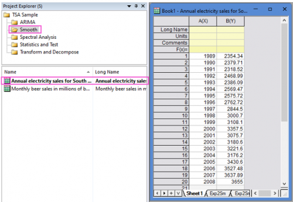
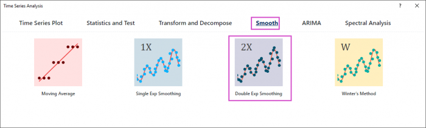
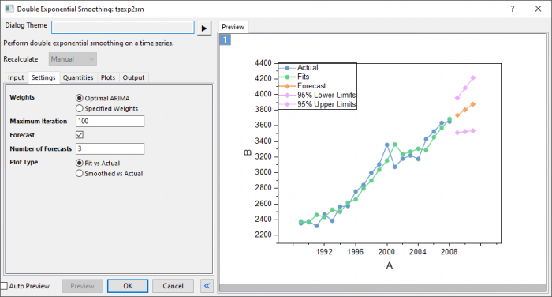
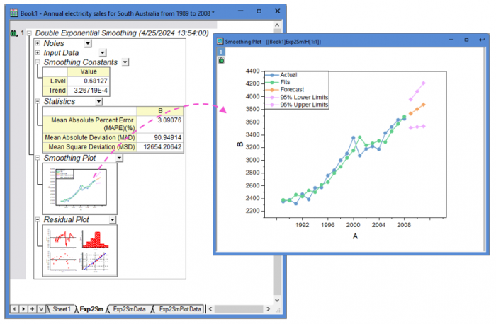

Tutorial for Double Exponential Smoothing
TSA-Smooth-DoubleExp-Tutorial
Summary
This Double Exponential Smoothing tool is supported in the Time Series Analysis App. It is suggested to smooth the time series with trend.
Notes for Starting
 |
Topics for Further Reading:
|
Steps in Origin
- Open the sample project file in Origin, go to Folder Smooth using the Project Explorer. Activate the workbook Annual electricity sales for South Australia from 1989 to 2008.

- Highlight column B in worksheet. Click the Time Series Analysis App icon in the Apps Gallery window.
- Choose Smooth tab. Click Double Exp Smoothing icon to open the dialog.

- In the Setting tab,set Weights to Optimal ARIMA. To predict beer sales in the next 3 months, set Number of Forecasts to 3.

- Click Preview button to display fitted curve with forecasts against actual data.
- Accept all other default settings and click OK button.
